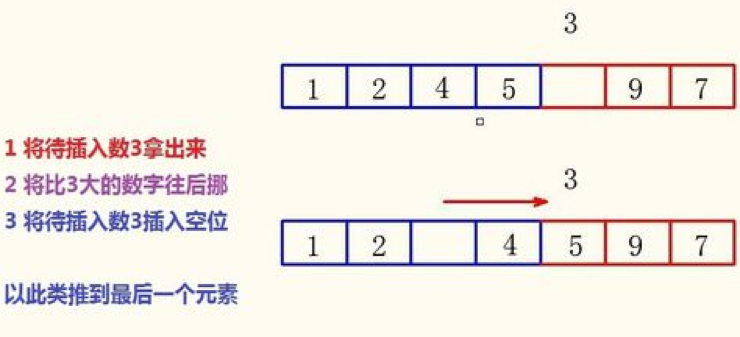

在这一章，我们要学习几种在计算机算法中极其重要的排序算法，不过放轻松，AP这部分不会直接让我们写一个排序算法，因此我们只需要理解这几个算法的异同就可以啦~让我们这就开始吧！💖
所谓的排序（sorting），就是让一个数组里的数，按照从大到小或者从小到大排列。下面是几种常用的排序算法：
选择排序
选择排序（selection sort）就是首先在数组中找到最小的一个值放在第一位，然后再找次小的放到第二位，以此类推一直到n-1次排序后，就能够得到一个递增的数列了。
以下是选择排序在Java里的一种实现，大家可以在纸上用一个实验数据来演算一遍：
/*
@param elements an array containing the items to be sorted.
Postcondition: elements contains its original items and items
in elements are sorted in ascending order.
*/
public static void selectionSort(int[] elements) {
for (int j = 0; j <elements.length) {
int minIndex = j;
for (int k = j+1; k < elements .length;k++) {
if (elements[k]<elements[minIndex])
minIndex = k;
}
int temp = elements[j];
elements[j]= elements[minIndex];
elements[minIndex] = temp;
}
}
插入排序
插入排序（insertion sort）简单地说就是将需要排序数据一个一个插入一个原本排列好的数组的对应位置。一开始完全混乱的情况下，我们把第一个数据当做一个排序号的数组。之后将第二个数据和这个数组比对，看看应该插入在哪。在插入完之后，我们就得到了一个有两个元素的排序好的数组。之后再将第三个数据插入在前面排序好的数组的对应位置。之后以此类推，直到全部排序完为止。
e.g.蓝色是我们已经排好的数组，红色为未排好的。

/*
@param elements an array containing the items to be sorted.
Postcondition: elements contains its original items and items
in elements are sorted in ascending order.
*/
public static void insertionSort(int[] elements) {
for(int j = 1; j< elements.length; j++) {
int temp = elements[j];
int possibleIndex = j;
while(possibleIndex > 0 && temp < elements[possibleIndex - 1]) {
elements[possibleIndex] = elements[possibleIndex - 1];
possibleIndex --;
}
elements[possibleIndex] = temp;
}
}
归并排序
归并排序 （merge esort）是一种递归排序，它将数组拆成几个小的单元，之后对小的单元进行排序。然后再把小的单元组合在一起再进行排序。 它的缺点十分明显：它需要储存一个跟原始数组一样长的数据。它还有个显著特点，就是排序时间不受原本数据排序的影响，不论是最好的情况还是最坏的情况。
public static void mergeSort(int[] elements) {
int n = elements.length;
int[] temp = new int[n];
mergeSortHelper(elements,0,n-1,temp);
}
/*
* @param elements, an array containing the items to be sorted.
* @param from, the begining index of the items in elements to be sorted.
* @param to, the ending index of the itens in elements to be sorted.
* @param temp, a temporary array to use during the merge process.
* Precondition:
* (elements.length == 0 ||
* 0<= from <= to <= elements.length &&
* elements.length == temp.length)
* Postcondition:
* elements contains its original items and the items in
* elements[from]...<= elements[to] are sorted in ascending order
*/
private static void mergeSortHelper(int[] elements, int from, int to, int[] temp) {
if (from < to) {
int middle = (from + to)/2;
mergeSortHelper(elements, from , middle, temp);
mergeSortHelper(elements, middle+1, to, temp);
merge(elements, from, middle,to,temp);
}
}
private static void merge(int[] elements, int from, int mid, int to, int[] temp) {
int i = from;
int j = mid +1;
int k = from;
while(i<=mid && j <=to) {
if(elements[i]<elements[j]) {
temp[k] = elements[i];
i++;
}
else{
temp[k] = elements[j];
j++
}
k++;
}
while (i <= mid) {
temp[k] = elements[i];
i++;
k++;
}
while(j <= to) {
temp[k] = elements[j];
j++;
k++
}
for (k = from; k<= to; k++)
elements[k] = temp[k];
}
小练习
让我们来练习一下我们刚学习的知识吧。
<lab lang="java" parameters="filename=Hello.java">
public class Hello {
public static void main(String[] args) {
// 在这里输入代码
}
}
</lab>